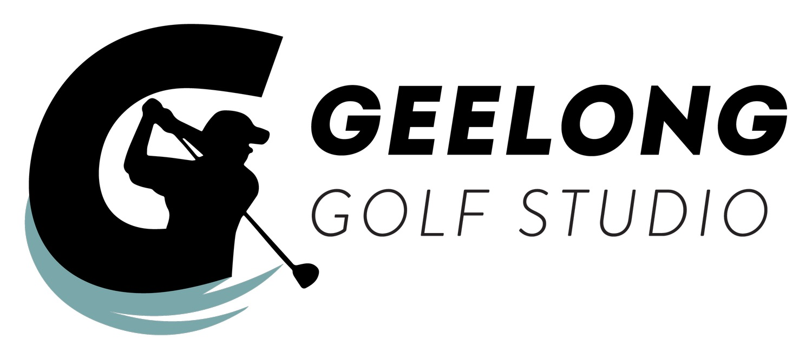
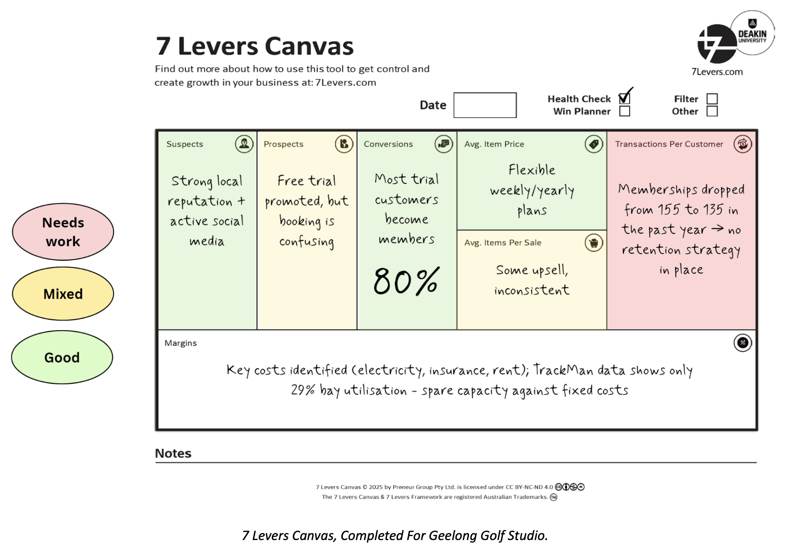

BUSINESS CONSULTING · 2026
Growing Geelong Golf Studio
Business Analysis & Growth Recommendations
A real-client consulting project completed through Deakin Business Development Clinic, focused on identifying opportunities to improve member retention and support business growth.

Geelong Golf Studio, Geelong, Victoria
Project Overview
Worked with Geelong Golf Studio as part of a consulting project through Deakin Business Development Clinic. With guidance from our mentor, we applied the 7 Levers Canvas to assess business performance and identify potential growth opportunities.

The 7 Levers Canvas used to structure our business analysis and identify potential growth opportunities.
Client Engagement & Research
Conducted an online client interview via Zoom to understand the business, its goals and challenges. We reviewed membership information shared by the client and researched competitor offerings and membership pricing to inform our analysis.
Key Business Opportunity
Our analysis identified transactions per customer and member retention as areas to investigate. We considered how a more proactive approach to member engagement could help the business identify disengaged members and encourage them to return.
KEY RECOMMENDATION
Proactive Member Re-engagement
We recommended using GymMaster's Retention Risk tools to identify members showing signs of disengagement, followed by personalised follow-up emails to check in, invite feedback and encourage members to return.
Proposed Implementation
- Review the Retention Risk widget to identify at-risk members.
- Develop a personalised email template for member follow-up.
- Explore GymMaster task automation for sending follow-up emails.
- Monitor member responses and engagement after implementation.
Deliverables & Presentation
Consolidated our research, analysis and recommendations into a consulting report, then presented our findings to the mentor and client.
Skills Demonstrated
This case study describes the team's analysis and proposed recommendations. The recommendations are not presented as implemented outcomes.
Back to Experience